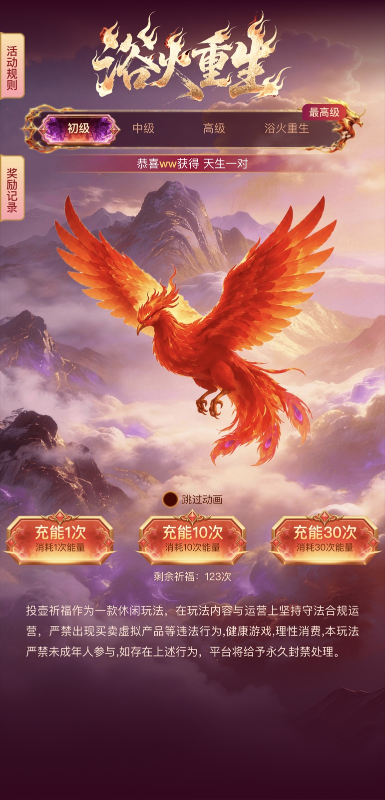
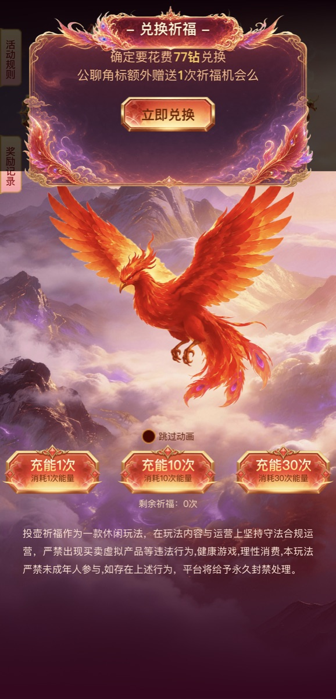
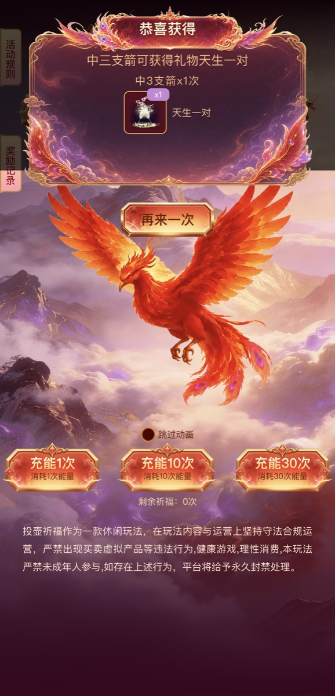
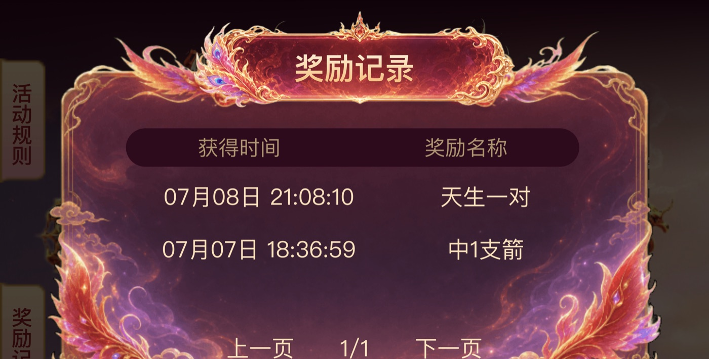

投壶祈福 · 活动自动化测试完整会话复盘
act202501_game_pitch_pot
TestQA H5
22030647 ～ 22030650
抽奖、看结果、兑换
信息足够“开始调查”，但还不足以决定测试深度、数据边界、证据标准和失败分类。
$deep-interview 活动自动化测方案
我现在想自动化测试一个活动，
你帮我规划一下如何测试。
服务端代码：.../act202501_game_pitch_pot
前端代码：.../202607/game_pitch_pot
测试 H5：testqaboc.../index.html
模拟用户：22030647 到 22030650
参数：?uid=22030647&sid=1
需要抽奖、看抽奖、兑换。
我想看一下你的方案。
最想证明什么？
选择：核心冒烟。先证明 H5 核心链路能否提测 / 回归。
第一版明确不做什么？
选择：不接 CI、不做数据清理。
断言方式是什么？
选择：UI + 接口 + 日志 / 管理端证据。
固定 UID 数据不足怎么办？
允许页面兑换；仍不足则记为环境数据阻塞。
TestQA 第一版核心冒烟，用 4 个 UID 判断页面、兑换、互动、结果和记录链路是否可用。
打开 H5 → 读取用户态 → 必要时兑换 → 1 次最低成本互动 → 结果弹窗 → 记录。
PASS / FAIL_PRODUCT / BLOCKED_ENV_DATA / BLOCKED_ACCESS
把元数据、非目标、约束和执行动作都拆成了独立 Goal，目标过碎，无法高效执行。
保留约束为 guardrail，只把真正需要执行和验收的动作保留为 Goal。
确认 URL、UID、允许的证据源和数据就绪状态。
四个 UID 页面、核心控件、用户配置与广播。
券不足时做最小页面兑换，核对金币和券方向。
每个可测 UID 只执行一次最低成本主动作。
读取 drawPrizeLog，确认结果记录可追溯。
补后端侧证明；不可访问则明确 BLOCKED_ACCESS。
按 UID 汇总 PASS、产品失败和环境 / 权限阻塞。
四个 H5 全部 HTTP 200；建立 API 捕获路径和 UID 数据矩阵。
四个 UID 页面加载、规则 / 记录入口、互动档位、用户态和广播均可读取。
22030648、22030650 各兑换 1 张券；22030647 已有 124 张券跳过兑换。
22030649 金币 0、券 0；按 Deep Interview 边界，不外部造数，分类为环境数据阻塞。
drawBuyBag 原始响应因捕获超时缺失；为避免重复扣费，没有重放 mutation。
| UID | 初始状态 | 动作 | 结果 |
|---|---|---|---|
| 22030647 | ticket 124 | 跳过兑换 | READY |
| 22030648 | ticket 0 | gold -77 / ticket +1 | READY |
| 22030649 | gold 0 / ticket 0 | 不造数 | BLOCKED_ENV_DATA |
| 22030650 | ticket 0 | gold -77 / ticket +1 | READY |



兑换完成，ticket 0 → 1
drawPrize 返回 dm_error=20004，“机会不足～”
ticket 1 → 0，业务状态发生变化
drawPrizeLog count=1，存在“天生一对”记录
ai-slop-cleaner no-op，未掩盖证据缺口。
G007 引用的 39 条证据路径全部存在。
独立 code-reviewer 复核报告和 payload。
7 条范围与安全 invariant 全部通过。
不能只看错误弹窗；接口响应、扣券状态和记录写入存在不一致。
“不想再给前端代码，也不需要给 H5 地址。” → 模块名自动发现 Go / JSON / H5。
“测试 testqa，灰度叫 ali-gray。” → 固化环境配置与 API/H5 域名映射。
“没有问我最想证明什么？” → 动态执行前强制目标澄清门禁。
“需要服务器时间设置与查看。” → timeSet 成为测试前置和证据。
“改版本后数据会清空。” → version 切换加入高影响 mutation 门禁。
“还要测试不在活动时间内。” → 活动前 / 中 / 后与失败不变项矩阵。
“每个活动功能点不一样，不能写死。” → discovery 成为唯一能力来源。
“需要造数据和边界 case。” → readiness、seed dry-run、恢复与审计。
“sid 默认 1；没 UID 从 white_user.go 找。” → 输入进一步收敛。
“KA 活动要补用户资格；改名研发自测。” → iUserHistoryPay 与最终 Skill 身份。
核心冒烟、完整回归、专项、框架或自定义目标。
GOPATH Go 目录、环境 JSON、H5、API、路由、Wiki。
不写死抽奖；仅为命中的任务、榜单、报名、领奖等建 case。
每个能力至少一个 normal case，并补真实边界与不变项。
READY / NEEDS_SEED_DRY_RUN / 数据、权限和授权阻塞。
timeSet、version、事件模拟、KA 资格均先 dry-run 和恢复设计。
Browser-stealth → Playwright → DevTools；mutation 保存 before/action/after。
证据相对路径、HTML/Markdown、只读 CI、seed/reset scaffold。
少规划一个已发现能力，就不能声称完整测试完成。
环境选择不等于 mutation 授权；不猜 DB/Redis key，不重复购买、互动或领奖来补截图。
| UID | 最终结论 | 关键说明 |
|---|---|---|
| 22030647 | PASS | 已有券，互动与记录正常 |
| 22030648 | PASS | 兑换后互动与记录正常 |
| 22030649 | BLOCKED_ENV_DATA | 金币 0、券 0，按边界不造数 |
| 22030650 | FAIL_PRODUCT | 错误响应但扣券并写记录 |
提示词给上下文，Deep Interview 把意图、范围和不可做事项变成规格。
Goal 拆得多不等于可执行；64 个碎片必须压缩成 7 个验收目标。
Ultragoal 的价值是持续状态、逐目标证据和失败后可恢复，而不只是任务列表。
这套经验最终进入 inke-act-develop-test：自动发现、能力门禁、边界数据和安全 mutation 成为标准能力。